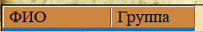
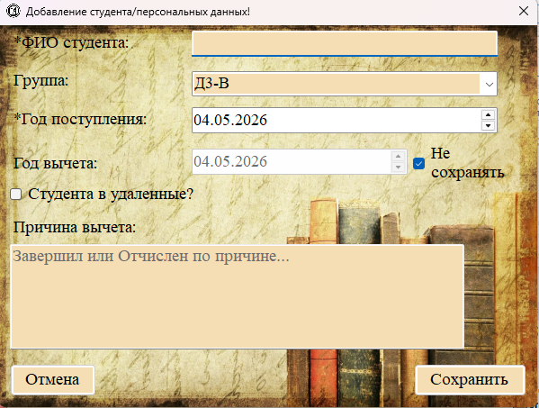
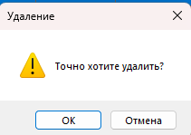

Раздел «Студенты» (меню «Студенты → Студенты») отображает список всех студентов, когда-либо обучавшихся в учебном заведении. Здесь хранится основная информация о студентах без привязки к срокам хранения.

Рис. 1. Таблица раздела «Студенты» с перечнем всех студентов
Отображаемые поля (колонки таблицы)

| Название колонки | Описание |
|---|---|
| ФИО | Полное имя студента (фамилия, имя, отчество). |
| Группа | Название учебной группы, к которой прикреплён студент. |
Добавление нового студента
При добавлении студента одновременно создаётся запись в таблице студентов и в таблице личных дел (персональных файлов).

Рис. 2. Форма добавления нового студента и личного дела
Поля формы:
— ФИО студента (обязательное) — вводится полностью.
— Группа — выбор из выпадающего списка существующих групп.
— Год поступления (обязательное) — выбор года с помощью календаря.
— Год вычета — необязательное поле (доступно только если снят чекбокс «Не сохранять»).
— Причина вычета — многострочное текстовое поле.
— Студента в удаленные? — при установке чекбокса студент будет помещён в архив удалённых.
Редактирование студента
1. Выделите строку с нужным студентом (одинарный клик по любой ячейке или по серому полю слева).
2. Нажмите кнопку «Редактировать» (на панели инструментов, в контекстном меню или внизу окна).
3. В открывшейся форме измените нужные данные.
4. Нажмите «Принять» для сохранения или «Отмена» для отмены.

Рис. 3. Форма редактирования студента и личного дела
Удаление студента

Рис. 4. Диалог подтверждения удаления
1. Выделите одну или несколько строк с нужными студентами.
2. Нажмите кнопку «Удалить».
3. Подтвердите действие в появившемся диалоговом окне.
4. При подтверждении студент и все связанные с ним записи (личное дело, документы) будут удалены из активных таблиц.

Рис. 5. Сообщение в статусной строке о результате удаления
Важно: При удалении студента из раздела «Студенты» также удаляются связанные с ним личное дело и документы. Рекомендуется предварительно переместить студента в раздел «Удалённые персональные файлы» и «Удалённые документы», если его данные могут потребоваться в будущем (например, при истечении срока хранения).